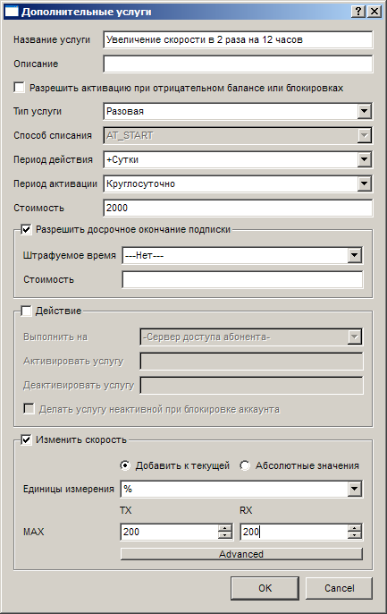
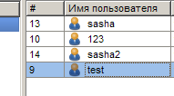
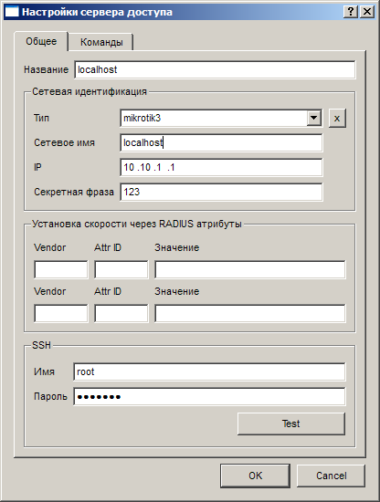
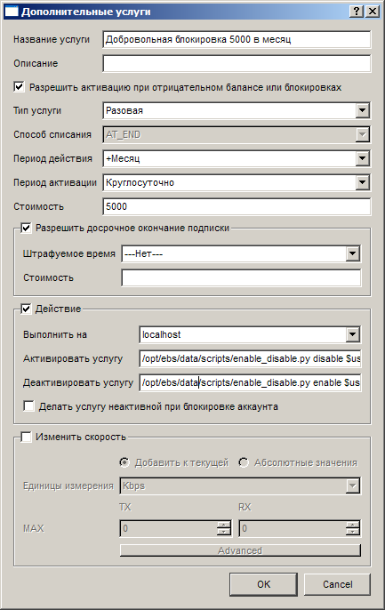

|
Примеры |
Top Previous Next |
|
Увеличение скорости в 2 раза на 24 часа

Добровольная блокировка лицевого счёта
Для начала в каталоге scripts/ биллинг-системы нужно создать скрипт на языке python и назвать его enable_disable.py
#!/usr/bin/env python
import psycopg2 import sys import ConfigParser import psycopg2, psycopg2.extras from DBUtils.PooledDB import PooledDB from DBUtils.PersistentDB import PersistentDB
try: config = ConfigParser.ConfigParser() config.read("/opt/ebs/data/ebs_config.ini")
persist = PersistentDB( setsession=["SET synchronous_commit TO ON;", 'SET DATESTYLE TO ISO;'], creator=psycopg2, dsn="dbname='%s' user='%s' host='%s' password='%s'" % (config.get("db", "name"), config.get("db", "username"),. config.get("db", "host"), config.get("db", "password")))
connection = persist.connection() cur = connection.cursor()
if sys.argv[1]=='enable': cur.execute("UPDATE billservice_account SET status = 1 WHERE id=%s" % sys.argv[2]) elif sys.argv[1]=='disable': cur.execute("UPDATE billservice_account SET status = 2 WHERE id=%s" % sys.argv[2])
cur.connection.commit() except Exception, e: fd = open('/opt/ebs/data/log/errors.log', 'a+') fd.write(str(e)) fd.close()
Внимание!!! Сохраните все отступы в приведённом скрипте! Скрипт принимает в качестве первого параметра требуемое действие, в качестве второго параметра id абонента.
После этого нужно установить недостающие библиотеки # apt-get install python-psycopg2 python-setuptools # easy_install DBUtils
Теперь проверим правильность работы скрипта 1. Возьмём id произвольного абонента в системе  Идентификаторы абонентов 2. Выполним из консоли скрипт с нужными параметрами # python enable_disable.py disable 9 В случае успешного выполнения скрипта пользователь test должен стать неактивным в системе. Если этого не произошло - смотрите лог-файл /opt/ebs/data/log/errors.log на предмет ошибок.
Теперь создадим разовую подключаемую услугу, которая заблокирует аккаунт абонента на месяц, но для начала добавим в систему сервер доступа, на котором работает биллинг-система(так как команды требуется выполнять именно на нём).
 Локальный сервер
Обязательно нажмите на кнопку "Test" и проверьте правильность введённых данных. В данной конфигурации поля "Сетевое имя" и "Секретная фраза" не имеют никакого значения, однако обязательны для заполнения в рамках условий для настроек серверов доступа.
 Параметры подключаемой услуги
В полях "Активировать услугу" и "Деактивровать услугу" указаны соответствующие параметры для скрипта и в качестве ID абонента передана переменная $user_id
This help file was created with an unregistered evaluation copy of Help & Manual. © EC Software. All rights reserved. This message will not appear if you compile this help file with the registered version of Help & Manual. |